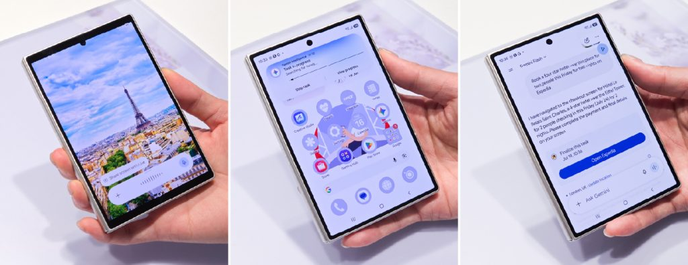
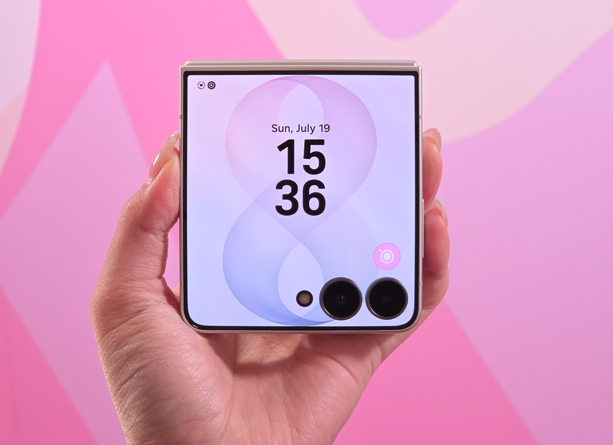

제미나이 쇼핑·예약·티켓 자동화, 카테고리별로 뭐가 되나요
쇼핑·식당 예약·여행 준비·공연 티켓 구매, 이 네 가지 다 제미나이한테 맡길 수 있어요. 다만 앱 이름과 실행 화면까지 공식으로 확인된 카테고리는 아직 두 가지뿐이에요. 그중에서도 여행·쇼핑 카테고리, 익스피디아·엣시가 확인됐어요. 2026년 7월 22일 런던 갤럭시 언팩에서 구글과 삼성전자가 공개한 내용을 카테고리별로 나눠 정리해 볼게요.
제미나이 인텔리전스(Gemini Intelligence)는 화면 속 상황을 이해해서 반복되는 디지털 업무를 대신 처리해 주는 구글의 기술 방향이에요. 그중 작업 자동화(task automation) 기능이 쇼핑·예약·여행·티켓 같은 일상 업무를 대신해요.
이 작업 자동화는 이번에 처음 나온 게 아니에요. 구글은 지난 2월 차량 호출이나 음식 배달 주문처럼 간단한 반복 업무만 맡길 수 있는 베타를 먼저 선보였어요. 이번 갤럭시 언팩에서 그 대상 범위가 쇼핑·식당 예약·여행·티켓까지 넓어졌어요. 구글코리아 블로그는 "이제 작업 자동화를 지원하는 앱이 일부 앱에서 40개 이상의 인기 앱으로 확대됩니다"라고 밝혔어요(구글코리아 블로그, 2026.07.22 기준).

삼성 뉴스룸이 언팩 현장에서 공개한 시연 화면이에요. 에펠탑 사진을 제미나이와 공유하고 호텔 예약을 요청하는 과정이 그대로 담겨 있어요.
이미지 출처: 삼성 뉴스룸 코리아 · 네이버 본문엔 받아서 재업로드 권장
제미나이로 쇼핑·예약·티켓 구매를 자동으로 시키려면 어떻게 하나요
제미나이 앱에 원하는 일을 자연어나 사진으로 요청하면, 제미나이가 여러 단계를 대신 밟은 뒤 결제 직전에 화면을 사용자에게 넘겨줘요.
삼성 뉴스룸이 공개한 시연 화면에 이 흐름이 그대로 나와 있어요. 실제 진행 과정을 단계로 옮기면 이래요.
- 에펠탑 사진을 제미나이에 공유해요. 사진 속 장소를 읽은 제미나이에게 원하는 조건을 말로 요청하면 돼요.
- 시연에서는 "이 근처에서 4성급 호텔을 이번 주 금요일부터 2인 2박으로 익스피디아에서 예약해 줘"라고 요청했어요.
- 화면에 "작업 진행 중" 카드가 떠요. 제미나이가 조건에 맞는 곳을 찾는 동안 다른 앱을 써도 괜찮아요.
- 조건에 맞는 곳을 찾으면 제미나이가 결과를 요약해 줘요. 에펠탑 근처 4성급 호텔의 결제 화면까지 옮겨 놨다는 답이 왔어요.
- 결제처럼 민감한 단계는 제미나이가 대신하지 않아요. "익스피디아 열기" 버튼으로 해당 앱을 직접 열어 사용자가 마무리해요.
- 갤럭시 Z 플립8은 전원 버튼을 길게 눌러 플렉스윈도우(Flex Window)에서 곧바로 제미나이를 부를 수 있어요.
참고로 시연 화면 상단에는 이 대화를 처리한 모델 이름으로 '제미나이 플래시(Gemini Flash)'가 표시돼 있었어요. 어떤 모델이 작업 자동화 전체를 대표하는지는 공식으로 밝혀진 게 없어서, 이번 시연 한 건에서 확인된 값으로만 봐 주세요.
쇼핑·식당 예약·여행·티켓, 카테고리별로 실제 확인된 건 뭔가요
네 카테고리 모두 구글이 공식으로 언급했어요. 그중 화면과 앱 이름까지 확인된 카테고리는 두 가지예요. 여행(호텔 예약 사례)과 쇼핑(엣시 사례)이에요.
공식 발표 원문에는 이렇게 적혀 있어요. "쇼핑과 저녁 식사 예약부터 여행 준비, 공연 티켓 구매까지 다양한 일상 업무를 제미나이에게 맡길 수 있습니다."(구글코리아 블로그, 2026.07.22 기준)
다만 이 네 카테고리마다 실제로 어떤 앱이 연결되는지는 확인 정도가 서로 달라요. 카테고리별로 나눠서 볼게요.
| 카테고리 | 구글 공식 문서 | 실명 확인된 사례 |
|---|---|---|
| 여행(호텔 예약 등) | 카테고리명 확인 | 익스피디아(Expedia) — 삼성 뉴스룸 시연 화면에 앱 이름·실행 버튼까지 노출 |
| 쇼핑 | 카테고리명 확인 | 엣시(Etsy) — 구글 공식 데모 영상에 로고·"Open Etsy" 버튼 노출, 여행(익스피디아)과 함께 공식 확인됨(단, 시뮬레이션 고지 있음) |
| 식당 예약(저녁 식사) | 카테고리명 확인 | 🔍 확인 필요 — 실명 앱 없음 |
| 공연 티켓 구매 | 카테고리명 확인 | 🔍 확인 필요 — 실명 앱 없음 |
정리하면, 이번 발표에서 실제 화면과 함께 이름이 나온 앱은 익스피디아(여행)와 엣시(쇼핑) 둘이에요. 구글은 엣시 화면이 담긴 데모 영상을 자체 공개했고, 익스피디아는 삼성 뉴스룸이 별도로 공개한 시연 사진에서 확인됐어요. 식당 예약과 티켓 구매는 카테고리 이름 말고는 아직 확인된 게 없어요.
이 데모 영상은 구글이 언팩 발표 페이지에 자체 삽입한 것으로, 화면에 "Working on your task", "Opening Etsy…" 카드가 뜨고 이어 "Open Etsy" 버튼과 함께 "Added Strawberry Tote Bag to cart"라는 문구가 나와요. 다만 영상 하단에는 "시퀀스는 축약·시뮬레이션되었으며, 밀접하게 감독하고 필요시 개입해야 한다"는 고지가 함께 붙어 있어요.
쇼핑 카테고리는 앱 이름 대신 조작 방법이 공식으로 하나 더 확인됐어요. 구글코리아 블로그는 "필요한 것을 말로 설명하기 어려울 때는 쇼핑 목록이나 참고하고 싶은 사진을 보여주는 것만으로도 작업을 시작할 수 있습니다"라고 밝혔어요. 제미나이가 고도화된 추론 능력으로 화면 속 내용을 읽어낸다는 뜻이에요. 복잡한 이미지도 프롬프트처럼 이해한다는 설명이에요.

갤럭시 Z 플립8을 접은 채로 든 모습이에요. 커버 화면인 플렉스윈도우에서 전원 버튼을 길게 누르면 제미나이를 바로 부를 수 있어요.
이미지 출처: 삼성 뉴스룸 코리아 · 네이버 본문엔 받아서 재업로드 권장
어느 기기·지역에서 되나요
갤럭시 Z 폴드8·플립8에서 공식 확인됐어요. 폴드8 울트라는 플래그십 특성상 지원 가능성이 높아요. 다만 이 기능 지원을 명시한 문장은 공식 1차 문서에 없어요🔍 확인 필요. 이용하려면 만 18세 이상이면서 지원 지역과 앱 범위 안에 있어야 해요.
공식 각주에 나온 전제조건 네 가지를 정리하면 이래요.
| 항목 | 확인된 내용 |
|---|---|
| 기기 | 갤럭시 Z 폴드8·플립8(공식 확인). 폴드8 울트라는 플래그십 특성상 가능성 높으나 공식 1차 문서에 명시 문장 없음 — 확인 필요. 전원 버튼 단축 실행은 플립8 플렉스윈도우 한정 |
| 연령 | 만 18세 이상만 이용 가능 |
| 지역·언어 | 일부 국가·언어에 한해 제공. 지원 앱에 미국·한국 포함, 단 일부 앱·기기·시장에 한정 |
| 앱 | 제미나이(Gemini) 앱에서 사용 |
국내 정확한 시작 시점과 40개 이상 앱의 전체 목록은 이번 발표문에 나와 있지 않아요🔍 확인 필요. 한국이 포함된다는 각주는 확인되지만, 한국에서 몇 개 앱이 실제로 되는지는 아직 확인 필요예요.
지갑과 관련된 부분도 하나 짚을게요. 구글 AI 프로(Google AI Pro) 6개월 체험판이 일부 대상 기기에는 딸려 있어요. 체험 기간이 끝나기 전에 따로 취소하지 않으면, 그다음부터는 구독료가 자동으로 청구돼요. 작업 자동화 자체와 별개 혜택이니 헷갈리지 않게 구분해 두면 좋아요.
자주 묻는 질문
Q. 갤럭시 S26이나 픽셀 10에서도 40개 이상 앱을 다 쓸 수 있나요?
공식 발표문은 갤럭시 Z 폴드8·플립8 시리즈를 기준으로 40개 이상 앱 확대를 설명해요. 지난 2월 베타가 있었던 갤럭시 S26·픽셀 10에 이번 확대가 언제 어떻게 적용되는지는 나와 있지 않아요.
Q. 제미나이가 결제까지 전부 대신 해 주나요?
아니요. 삼성 뉴스룸 시연에서는 제미나이가 조건에 맞는 곳을 찾아 결제 화면까지 이동시켜 주고, 실제 결제와 마지막 확인은 사용자가 해당 앱에서 직접 하도록 넘겼어요.
Q. 베타 때 있었던 차량 호출·배달 주문도 계속 되나요?
공식 발표문은 이번에 넓어진 범위를 쇼핑·식당 예약·여행·티켓 네 가지로 설명해요. 지난 2월 베타의 차량 호출·배달 주문이 이 네 가지에 그대로 포함되는지, 별도로 유지되는지는 이번 발표문에 명시돼 있지 않아요.
참고한 곳
· 구글코리아 블로그 — 갤럭시 언팩 2026에서 공개된 3가지 구글 업데이트
· 삼성 뉴스룸 코리아 — 한발 앞서 만나보는 차세대 폴더블, 새로운 갤럭시 Z 시리즈
✔ 같이 보면 좋아요
· 제미나이 작업 자동화 쓰는 법 — 쇼핑·예약·여행·티켓까지 대신 시키기
하루 정리
· 제미나이 인텔리전스 작업 자동화는 쇼핑·식당 예약·여행 준비·공연 티켓 구매까지 대신해 줘요(2026.07.22 구글·삼성 공식).
· 실제 화면과 앱 이름까지 확인된 카테고리는 여행·쇼핑 두 가지예요. 삼성 뉴스룸 시연의 익스피디아 결제 화면, 구글 공식 데모 영상의 엣시 화면이 각각 나왔어요.
· 여행·쇼핑은 실명 앱(익스피디아·엣시)까지 공식 확인됐고, 식당 예약·티켓 구매는 여전히 카테고리 이름만 확인됐어요.
· 기기(갤럭시 Z 폴드8·플립8, 폴드8 울트라는 확인 필요)·연령(만 18세 이상)·지역(미국·한국 포함 일부 국가)·앱(제미나이 앱)이 전제조건이에요.